03/29/08
Closing Meet at Butterfield
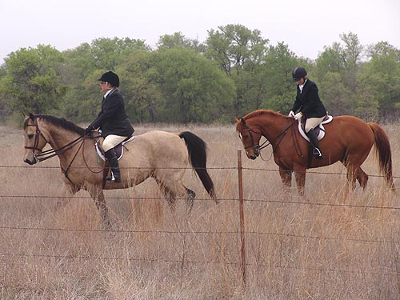
Laura and Jane watching the hounds work.
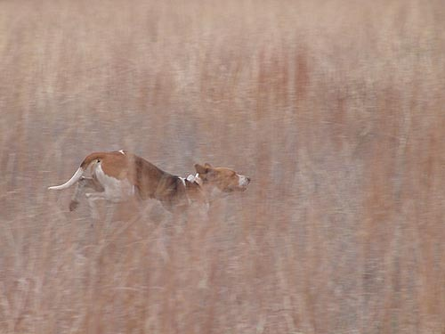
It was possible to catch an occasional glimpse.
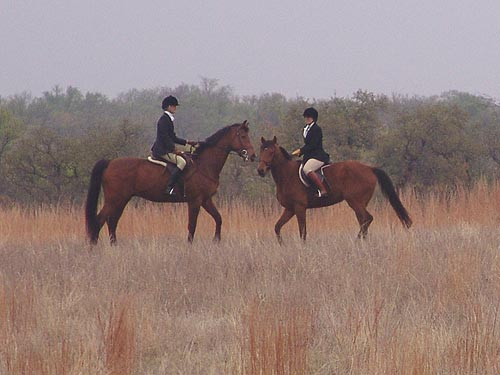
Sharon and Angie watching as Chrissie gathered the hounds.
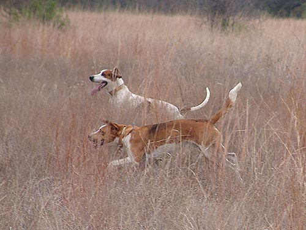
Returning to the horn.
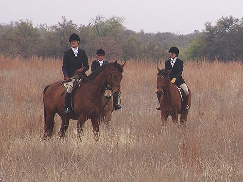
There'd been a lot of rain, and the ground had standing water in places.
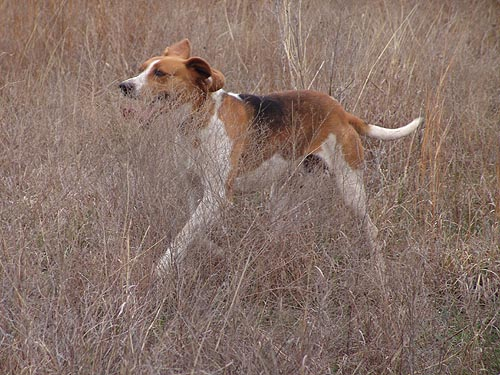
Another hound returning.
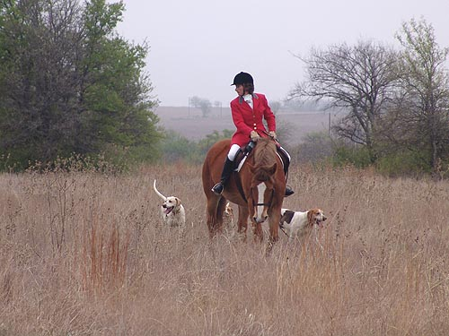
Watching for hounds.
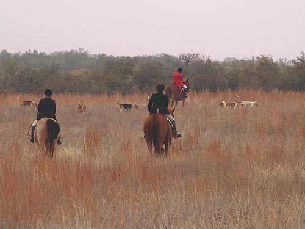
Heading to the next covert.
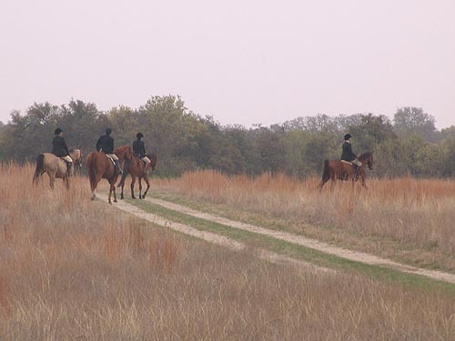
Some green grass is starting to pop up.
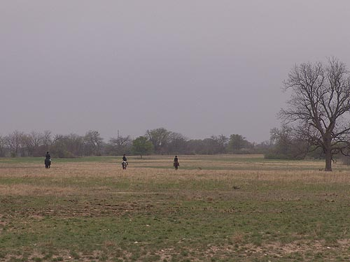
David, Melanie and Jennifer patrolled the North East corner of the property.
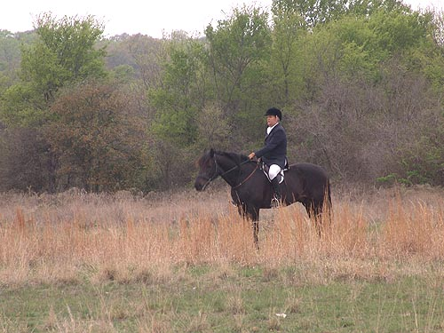
Keeping the hounds from the road.
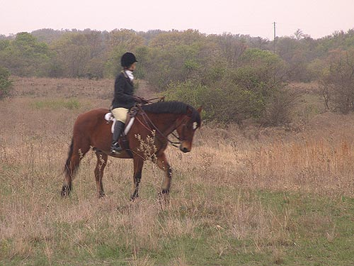
Scanning the edge of the ravine.
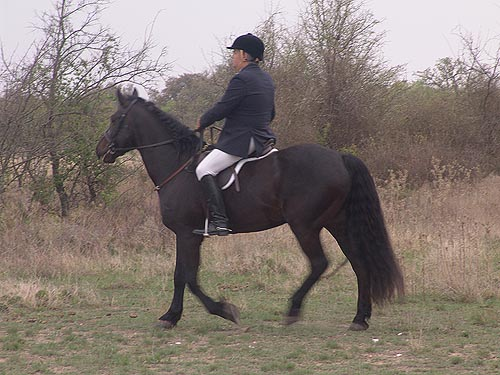
Othello was aware of hounds skirting the edge of the woods.
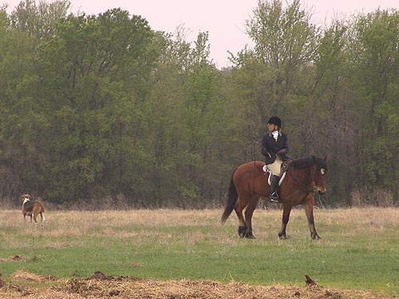
Watching the huntsman work the hounds away from the edge of the property.
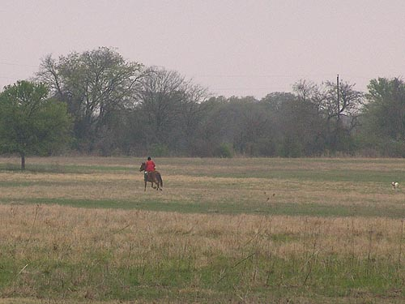
Chrissie and Thistle had a good gallop keeping up with the speaking hounds.
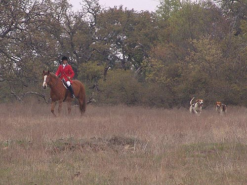
The run was over, and the hounds came back to the huntsman.
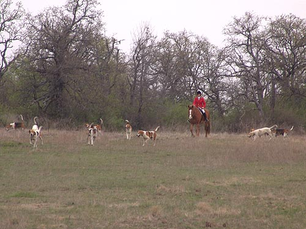
Most of the hounds back, and thinking of where to go next.
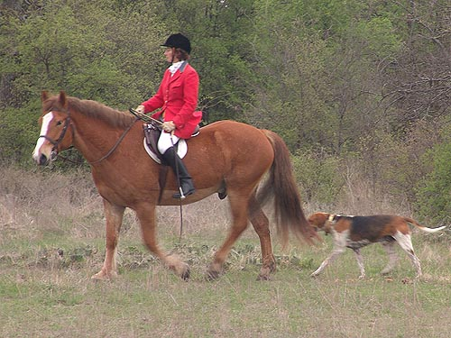
This is Thistle's second year with Chrissie.
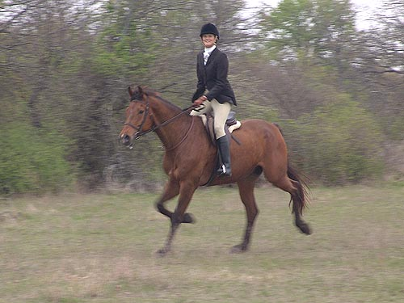
Sharon trotting on as Chrissie moves on with the hounds.
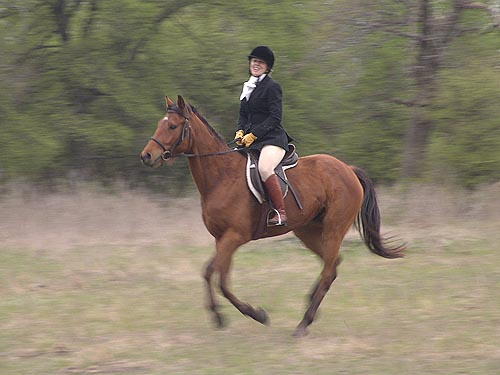
Angie cantering to keep up.
Hunting Pictures continued on the Next Page